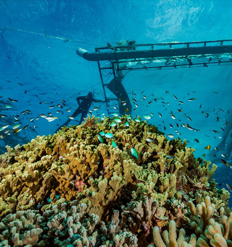
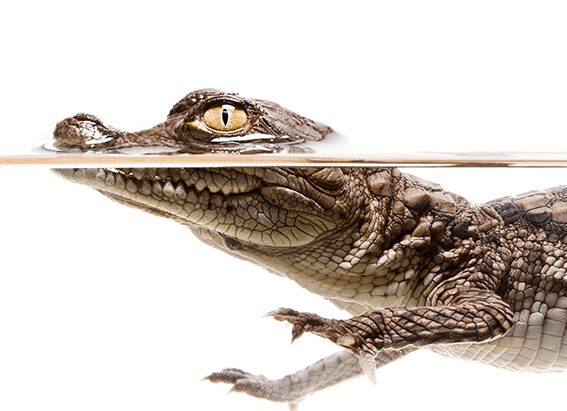
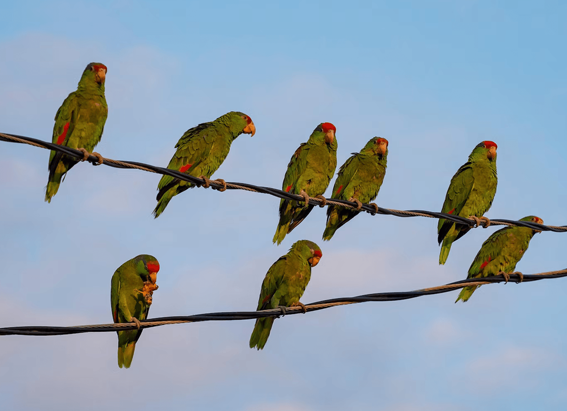

NATIONAL GEOGRAPHIC
Is World Heritage status enough to save endangered sites
TRAVEL
- 
In December 2016, the city government of Vienna, Austria, announced what sounded like welcome news at the time: A public-private partnership had formed to build a new ice-skating rink just outside the city’s century-old Wiener Konzerthaus.
For those who have visited the luminous birthplace of Beethoven, Mozart, and Freud, two characteristics quickly become evident. First, the core of Vienna is an architectural dreamscape of baroque palaces, immaculate courtyards, and a neo Gothic city hall. Second, Austrians love winter sports, which has manifested itself in a ritual that takes place in the heart of Vienna at the beginning of every year since 1996: the construction of a seasonal ice-skating rink, or Eistraum (“Ice Dream”), which draws hundreds of thousands of visitors.
In other words, ice-skating is as Viennese as sausages and symphonies. So the idea of a permanent rink, housed inside a high-rise complex to minimize obstruction to pedestrians, would not have been expected to invite controversy. But one important stakeholder strenuously objected: the UNESCO World Heritage Committee, which decreed that the new complex would undermine central Vienna’s “outstanding universal value.”
Vienna’s historic city center has been a UNESCO World Heritage site since 2001, one of the organization’s 1,154 unique landmarks around the globe deemed worthy of protection. Since announcing its objection to the high-rise rink in 2017, the World Heritage committee has kept Vienna on its “in danger” list joining 50 other embattled sites, from the ancient villages of northern Syria to Everglades National Park in Florida. If the city fails to satisfactorily address the committee’s concerns, it risks being permanently “de-listed” as a UNESCO landmark.
The controversy involving a revered city and its beloved pastime has brought unwanted attention to the World Heritage program which celebrates its 50th anniversary on November 16, 2022. Its governing body, the United Nations Educational, Scientific and Cultural Organization, was formed in 1945 as part of a postwar global effort to promote cultural understanding and, with that, peace. Twenty-seven years later, participating countries ratified UNESCO’s World Heritage Convention in an effort to protect historically important sites from military conflicts, natural disasters, looting, and economic pressures.
Challenges to protecting World Heritage sites
The World Heritage designation has unquestionably succeeded in attracting visitors to isolated, often economically disadvantaged places. Its track record has been mixed, however, when it comes to preventing the flow of tourists from becoming a deluge. For example, the once somnolent village of Hoi An, on Vietnam’s central coast, now faces a crush of visitors that its narrow streets cannot accommodate.
Some locales have succeeded in managing overtourism on their own, like Dubrovnik, Croatia, which, under pressure from UNESCO, capped the number of visitors in its historic center.
Thankful for the agricultural efforts of these spirits but wary of falling victim to their fury, the people protected themselves from physical harm by lighting ritual fires on hilltops and in fields. They disguised themselves as fellow ghouls, McCarthy says, so as not to be dragged into the otherworld via the cave.
Then there are Cambodia’s 12th-century temples at Angkor Wat, at one time accessible only to priests. The temples were attracting 22,000 annual visitors when they were inscribed as a World Heritage site in 1992. Today, that number is five million and is expected to double by 2025.
Still, UNESCO’s influence can extend only so far. In Laos, for example, the government has proceeded with plans to construct a dam on the Mekong River near the ancient capital of Louangphabang, despite UNESCO’s insistence that a heritage impact assessment takes place beforehand.
Climate change threatening World Heritage sites
Of late, UNESCO has had to confront a newer enemy: climate change. In 2007, it published a paper written by scientists who alerted the organization to growing threats in 26 different World Heritage sites. These included glaciers and biodiversity hotspots, but also archaeological landmarks such as the sprawling pre Hispanic earthen city at Chan Chan, Peru, due to intense precipitation brought by El Niño.
On this front as well, the organization has limited tools at its disposal. An example is Australia’s legendary Great Barrier Reef, a World Heritage site since 1981. Last year, UNESCO threatened to place the vast coral ecosystem on the “in danger” list if the Australian government did not more adequately work to reduce its greenhouse gas emissions the first time in its history that climate change factored into such a warning.
Comments :
- john Very good
- john Very good
Leave a Reply
Your email address will not be published. Required fields are marked*
Related posts:
-
American crocodiles are spreading north in Florida. That’s a good thing.
On a canal bank lined with palm trees off the Banana River in Satellite Beach, Florida, in October, a 10-foot-long American crocodile basked in the midday sun, its toothy jaws opening as neighbors looked on from their docks.
View article -
 What’s the real difference between a mutt and a designer dog
What’s the real difference between a mutt and a designer dogThough much attention is given to purebred and designer dogs, more than half of all dogs living in the United States are mixed breeds: the all-American mutt, celebrated on National Mutt Day on December 2.
View article -
How these parrots went from the tropical jungle to the concrete jungle
Temple City, California, is an unassuming city east of Pasadena that’s home to the usual busy thoroughfares, shopping malls, and residential neighborhoods that one expects in densely developed Los Angeles County.
View article